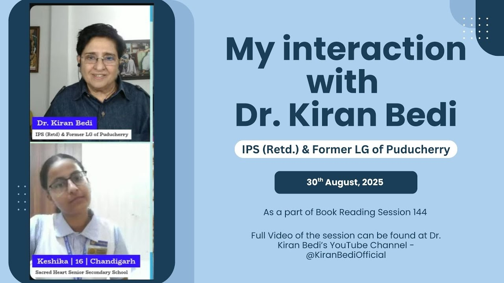

Recommendation
Letter from Government High School, Kotli
Digital Disha received a letter of recommendation from Headmaster Mr. Nihal Singh after the first cohort at Government High School, Kotli.
Recognition
Digital Disha is still young, but its first cohort has already received encouragement from educators and public recognition from leaders who noticed the initiative’s mission.
Recommendations & recognition
Digital Disha received a letter of recommendation from Headmaster Mr. Nihal Singh after the first cohort at Government High School, Kotli.
Digital Disha was noticed during Keshika’s interaction with Dr. Kiran Bedi as part of her work around youth leadership and rural digital literacy. Digital Disha was acknowledged as a meaningful student-led effort to bring digital literacy and practical technology exposure to rural communities.

Voices
Many students who had never used a computer for anything
beyond games were suddenly making timetables, presentations, and even writing code.
- Mr. Nihal Singh (Headmaster or Government High School, Kotli)
Digital Disha made me realize how important a computer can be, not just for our school but for our life. I even kept my notes safely and go through them often.
- Simran (Student during the first cohort)
Bharti, my child came home speaking about computers with confidence. She was excited to learn about computers.
- Mrs. Rekha (Mother of Bharti, student during the first cohort)
Evidence links
Thank you for your interest in Digital Disha!